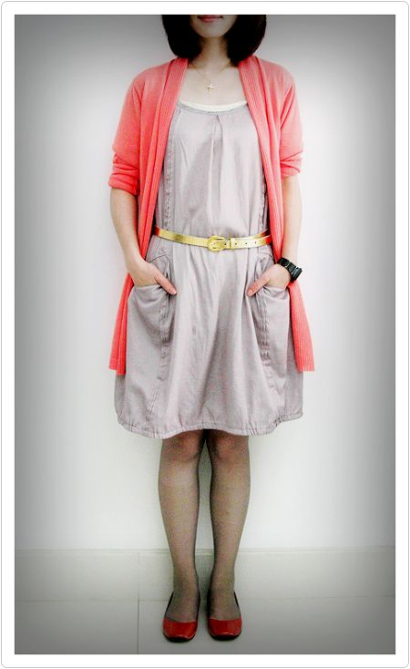

Dress Blog @ Apr 30, 2009
节前最后一天工作。天气干燥地冒出火气疙瘩了。
纽约的朋友在线上说：“你这样打扮在纽约不算土鳖，是不错的，但不属于有个性的。”
个性这个东西我也爱，如果工作环境允许，每个人都有充分发挥的自由空间。记得以前虎子少年时曾经想穿耳洞，他父母说：“如果你以后职业允许，当然可以，可是现在不行。”
第一张的上衣颜色比较准确，偏暖的柔和的橘红色；

以前特别不能接受金色的或者镶钻的腰带，也许莱迪、华欣地下商城卖的泛滥，总给人廉价品质低劣的印象。可是今年我也买了一条金色腰带，因为好喜欢它的做工。


偏暗的橘红色鞋，靠近鞋尖的底部各有三颗并列的小小的铜铆钉。

17：37终于完成手上的工作，眼也花腿也酸了，这时候姐姐打电话来说高架上堵车....节日还没开始就塞车啦？假期没任何外出的打算，准备在这个城市里消磨时光，仔细想想又没有什么特别的活动可安排，还是宅在家里休息看电影读小说，一天用来看望父母。假期的时间总是不经用滴~